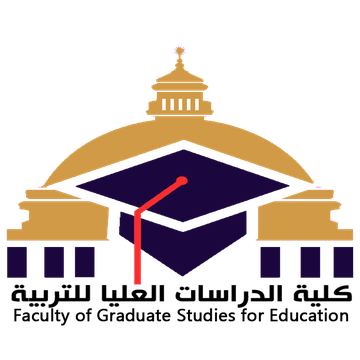
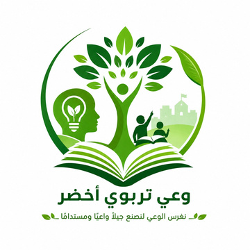
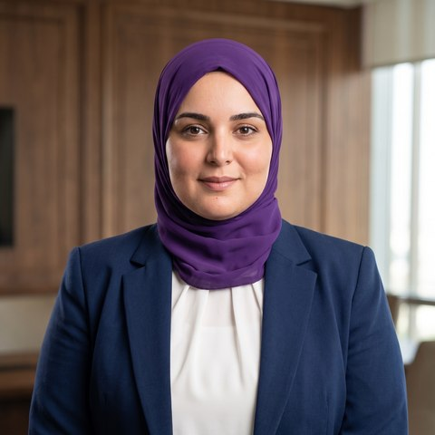
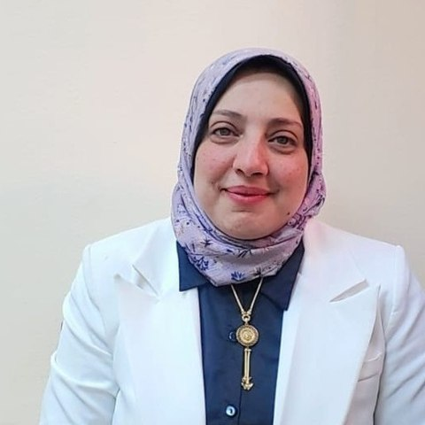

الهمسة الأولى
الأرض لا تحتاج معلّمًا يشرح عنها، بل تلميذًا يحترمها في تصرفاته اليومية.
المعاينة غير محمّلة الآن


مبادرة تربوية بيئية تهدف إلى ترسيخ قيم الاستدامة داخل الحرم الجامعي والمدارس عبر القصة الرقمية والمحتوى التوعوي، وربط الطالب بمسؤوليته تجاه بيئته بأسلوب عصري وقريب من وجدانه.
الجامعة الخضراء ليست مبنى صديقًا للبيئة فحسب، بل منظومة فكرية تُعيد تشكيل علاقة الطالب وعضو هيئة التدريس بالموارد المحيطة، من ترشيد الطاقة والمياه إلى تبني مناهج ومشروعات بحثية تخدم أهداف الاستدامة، بما يجعل الحرم الجامعي نموذجًا يُحتذى به مجتمعيًا.
من فعاليات المبادرة الوطنية للمشروعات الخضراء الذكية بجامعة القاهرة
التعلّم البيئي يبدأ من أبسط مساحة خضراء داخل المدرسة.
تمتد فلسفة الجامعة الخضراء إلى المدارس عبر برامج توعوية وأندية بيئية تُمكّن الطلاب من ممارسة الاستدامة عمليًا، فالقيمة البيئية حين تُغرس في الطفولة تتحول إلى سلوك يومي راسخ يرافق الطالب حتى مراحل التعليم العالي.
أربع همسات فيديو قصيرة موجّهة للطلاب والمعلمين، تُذكّر بأن الوعي البيئي قيمة تربوية قبل أن يكون سلوكًا.
الأرض لا تحتاج معلّمًا يشرح عنها، بل تلميذًا يحترمها في تصرفاته اليومية.
أصغر سلوك بيئي في الفصل، قد يكون أكبر درس يتذكره الطالب طوال حياته.
الجامعة الخضراء تبدأ من معلّم يؤمن بالاستدامة قبل أن يُدرّسها.
كل همسة تربوية خضراء بذرة وعي تكبر مع الطالب يومًا بعد يوم.
محاور رئيسية توجّه عمل المبادرة وتقيس أثرها داخل البيئة الجامعية والمدرسية.
تقليل الاستهلاك غير الضروري للكهرباء بالمرافق التعليمية.
التحول التدريجي نحو المحتوى والتقييم الرقمي.
دعم مبادرات الزراعة داخل الحرم الجامعي والمدارس.
محتوى توعوي مستمر يصل إلى الطلاب والمعلمين.
فريق أكاديمي يجمع بين الخبرة البحثية وحب الفكرة، يعمل على تحويل الوعي البيئي إلى تجربة تربوية حقيقية.


جميع ملفات المبادرة في مكان واحد. المعاينات تُحمَّل عند الطلب فقط للحفاظ على سرعة الصفحة.
عرض تقديمي من 14 شريحة يشرح فكرة المبادرة ومحاورها الرئيسية.
دليل إرشادي للمعلم لتطبيق أنشطة المبادرة وهمساتها التربوية داخل الفصل.
عرض موجز لأهم الدراسات العربية والدولية حول المشروعات الخضراء الذكية والجامعات المستدامة.
تصميم بصري يلخّص أهم أرقام وأهداف المبادرة في نظرة واحدة.